Sharing and Reusing Workspace Objects
Sharing and Reusing Workspace Objects
What is Workspace Sharing?
In OneStream, sharing objects between Workspaces means you can reference and reuse existing components – like dashboards, data adapters, parameters, and Cube Views – across multiple Workspaces without having to duplicate them.
Communicating this powerful sharing tool to your development teams will help you realize more synergies between development efforts, and ultimately help you extend your OneStream investment.
Sharing and Reusing Workspace Objects › Do I Need to Share Workspaces?
1. Leverage Existing Work
Instead of recreating dashboards or related objects from scratch in each Workspace:
You can link to or reference objects that already exist in another Workspace.
This reduces development time, encourages reusability, and maintains consistency across projects or teams.
Sharing and Reusing Workspace Objects › Do I Need to Share Workspaces?
2. Eliminates Redundancy
Duplicating dashboard components across Workspaces leads to:
Multiple versions of the same object.
Increased storage use.
Difficulties in updating or maintaining consistency.
Sharing allows centralized updates to be reflected automatically across all consuming Workspaces.
Sharing and Reusing Workspace Objects › Do I Need to Share Workspaces?
3. Ensures Consistency
When objects are shared rather than duplicated:
Everyone is working with the same version of the dashboard or Cube View.
Business logic (like calculations or parameters) is consistent across the organization.
The risk of data discrepancies or misinterpretation is significantly reduced.
Sharing and Reusing Workspace Objects › Do I Need to Share Workspaces?
4. Improves Governance and Control
Sharing supports better governance by:
Centralizing control of critical objects.
Enabling a single source of truth.
Making audits and updates more manageable.
Reducing errors caused by conflicting versions.
Sharing and Reusing Workspace Objects › Do I Need to Share Workspaces?
5. Supports Scalable Development
For organizations with multiple developers or departments:
Teams can collaborate without stepping on each other’s toes with the use of a shared Workspace – a Central Library, if you will – containing objects that are meant to be shared (or extended) for consumption by other Workspaces.
Developers can test or enhance shared components in their own Workspace before proposing changes to the central/shared version.
As you begin your OneStream journey or explore ways to make your OneStream investment work for you, there are undoubtedly areas where Workspace sharing will allow you to leverage existing work and cut down development time.
Sharing and Reusing Workspace Objects › How Do I Share Workspaces?
Preparation
To share objects from a Workspace, the Workspace containing the shared objects (the source Workspace) must be configured to allow sharing by setting the Workspace property Is Shareable Workspace to True.
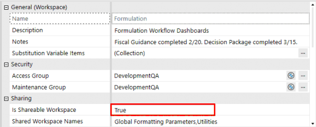
Figure 9.1
Once the source Workspace is configured, objects can be shared in two ways:
Sharing and Reusing Workspace Objects › How Do I Share Workspaces? › Preparation
Direct Reference
When calling an object from the source Workspace into the target Workspace, reference the object using the syntax WorkspaceName.ObjectName.
Sharing and Reusing Workspace Objects Direct reference example – showing the object name preceded by the source Workspace name.
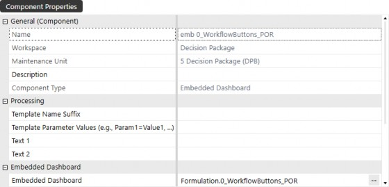
Figure 9.2
Sharing and Reusing Workspace Objects › How Do I Share Workspaces?
Method #1 – Embedded Dashboards
To display a shared dashboard from another Workspace on your Workspace’s dashboard, you’ll start by creating an embedded dashboard component that can be a placeholder to nest on your dashboard.
The first step is to create an embedded dashboard component. Navigate to the Embedded Dashboard component list and click on the Create Dashboard Component button from the Workspace toolbar.
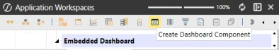
Figure 9.5
Select Embedded Dashboard from the Create Dashboard Component dialog box and click OK.
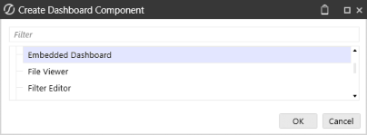
Figure 9.6
Name the embedded dashboard component and click Save. Once you have created the new component, click on the Edit button on the Embedded Dashboard property.
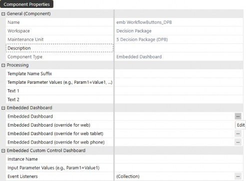
Figure 9.7
The object lookup dialog box opens, displaying which Workspaces are shared and to which the user has access. You may have shared Workspaces in your application that a user does not have access to, which will not be displayed until you give the user access to those specific Workspaces.
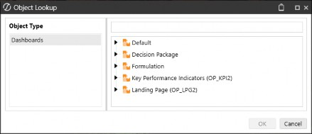
Figure 9.8
Start typing the name of the dashboard you want to reuse, and the lookup menu will filter it based on your search criteria. Once you find the desired dashboard, select it and click OK.
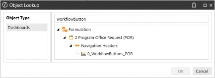
Figure 9.9
Navigate to the dashboard where you want to display the shared object and click on the Dashboard Components tab. Click the ➕ button and select the embedded dashboard component, then click OK.
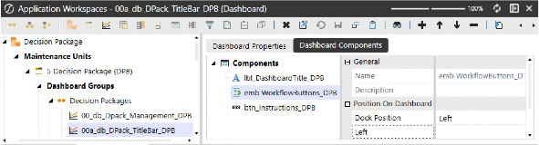
Figure 9.10
To test the dashboard and ensure it displays, click the View Dashboard button.
Figure 9.11
The result will display the shared dashboard.
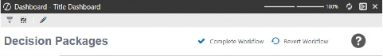
Figure 9.12
Sharing and Reusing Workspace Objects › How Do I Share Workspaces?
Method #2 - Open Dialog Box with Button
Another common method of displaying shared dashboards is using a button to open a dialog box. Create a new button component and scroll down to the User Interface Action properties. From the Selection Changed User Interface Action property, select Open Dialog With No Buttons from the drop-down menu, then select the dashboard to open in Dialog from the Edit button.
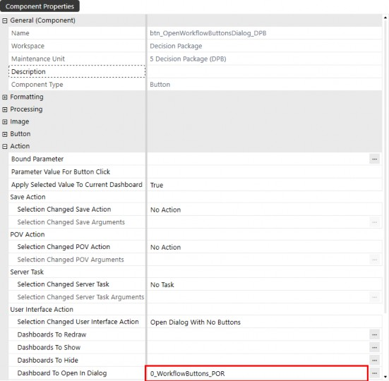
Figure 9.13
To test the button’s action, attach the button to your dashboard’s Dashboard Component tab using the ➕ button, and then click View Dashboard. Once you see your button on the dashboard, click it, and you should see a dialog box appear with the shared dashboard.
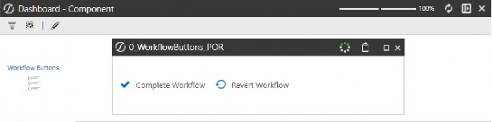
Figure 9.14
These are just some examples of how you can share objects between Workspaces, but this should give you the groundwork and inspiration to enable you to share Workspace objects to enhance your application and streamline your development.
Sharing and Reusing Workspace Objects
Sharing Workspace Objects Examples
Here are a few examples of when you might want to share Workspace objects and how to properly configure your Workspaces to allow sharing. Although these are examples of use cases for sharing Workspaces and inherited objects, as you read through the examples, just imagine how much efficiency you can bring into your application by leveraging OneStream’s Workspace sharing functionality. With this feature in your toolbox, aside from streamlining development, you can significantly reduce the number of redundant objects and build efforts for your organization.
Sharing and Reusing Workspace Objects
Conclusion
Sharing Workspace objects in OneStream is an incredibly useful concept that allows you to reduce the need to recreate the same objects over and over again. For advanced developers, this allows you to seamlessly integrate various intricate solutions within your application with the ability to restrict sharing as needed. For users who are new to OneStream or just starting to explore the breadth of functionality, simply understanding how sharing Workspace objects works will give you a head start in envisioning where you can take your OneStream investment.